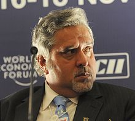

Vijay Mallya

Vijay Mallya is an Indian businessman and politician. The son of businessman Vittal Mallya, he is the ex-chairman of United Spirits Ltd, the largest spirits company in India and continues to serve as Chairman of UB Group, an Indian conglomerate with interests in beverage alcohol, aviation infrastructure, real estate and fertiliser among others. He has been the Chairman of Sanofi India (previously Hoechst AG and Aventis) as well as the Chairman of Bayer CropScience in India for over 20 years, in addition to being the Chairman of several other companies.He recently announced that he shall retire from the chairmanship of Sanofi India.
Once called the "King of Good Times" due to his extravagant lifestyle, Mallya and his companies have been embroiled in financial scandals, and controversies since 2012. Mallya left India on 2 March 2016 after saying he wanted to move to Britain to be closer to his children.A group of 17 Indian banks are trying to collect approximately ₹9,000 crore (US$1.3 billion) in loans which Mallya has allegedly routed to gain 100% or a partial stake in about 40 companies across the world. Investigative agencies, such as Income Tax Department and the Central Bureau of Investigation for charges including financial fraud and money laundering, and theAttorney General said that Mallya's assets abroad are "far in excess to loans taken by him". The 17 banks petitioned the Supreme Court of India in March 2016 to try to prevent Mallya from leaving the country, but the Indian government indicated that he had already left. The Enforcement Directorate of India also filed a money laundering case against him in March 2016 for allegedly sending abroad some ₹900 crore (US$130 million) that had been loaned to his airline. On 24 April 2016, the Ministry of External Affairs (India) revoked Mallya's passport, and he resigned from the Rajya Sabha on 2 May 2016, the day before the Ethics Committee of the Rajya Sabha was prepared to recommend his expulsion.Currently the Enforcement Directorate is seekingInterpol to raise an international arrest warrant against Mallya.Also, the High Court of Judicature at Hyderabad issued a non-bailable warrant against Mallya on 13 March 2016 for his failure to appear in the court regarding an allegation of cheating theGMR Hyderabad International Airport Ltd by issuing them a dishonoured cheque for ₹50 lakh (US$74,000).
Mallya also co-owns the Formula One team Sahara Force India. His companies own Indian Premier League team Royal Challengers Bangalore, the I-League teams Mohun Bagan AC and East Bengal FC. He is also a member of the World Motor Sport Councilrepresenting India in the FIA.He is also known for having launched Kingfisher Airlines, an airline established as a major business venture in 2005 that later became insolvent and was shut down in 2012. Mallya also served in the Rajya Sabha, the upper house of the Parliament of India, for his home state Karnataka.